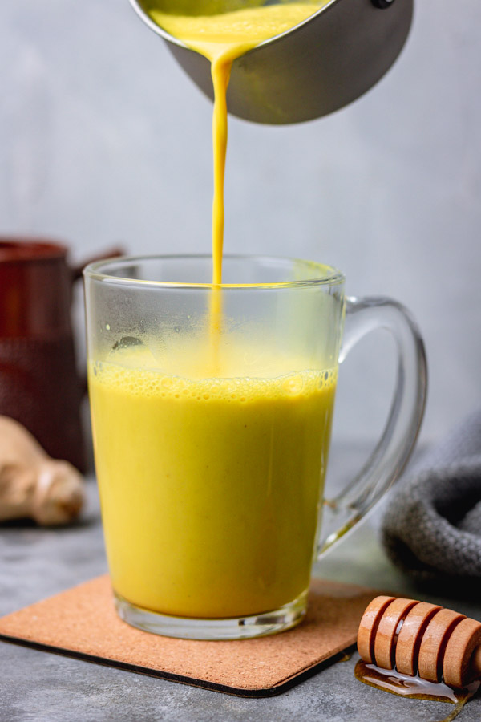

Turmeric Milk

Description
Turmeric Milk, also known as "Golden Milk", is an anti-inflammatory drink that
can aid in digestion and improve sleep. The soft spices are delightful, and it
can easily be made in a pot on the stove.
Ingredients
- Whole Milk or Coconut Milk
- Ground Turmeric
- Ground Nutmeg
- Black Pepper
- Cinnamon
- Ground Ginger *Optional*
Steps
- On low heat, add ground black pepper in a small pot or saucepan
- Add in ground nutmeg, turmeric, and cinnamon
- Lightly toast the spices to release the plant oils
- Add 1 cup of Whole Milk or Coconut Milk
- Simmer on low heat until the milk takes on the golden color of turmeric, to desired heat
- Serve in a glass mug or thermos, add organic honey to taste